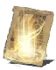

Descrição: Milagre altamente avançado. Trecho do tomo da Cura Avançada.
Restaura muito os PV. Seu efeito é o mesmo da Cura Avançada, mas possui usos limitados.
O sábio tomo da Cura Avançada requer muito treinamento para ser corretamente interpretado, sendo acessível a poucos.
Localização:
Usos: 1
